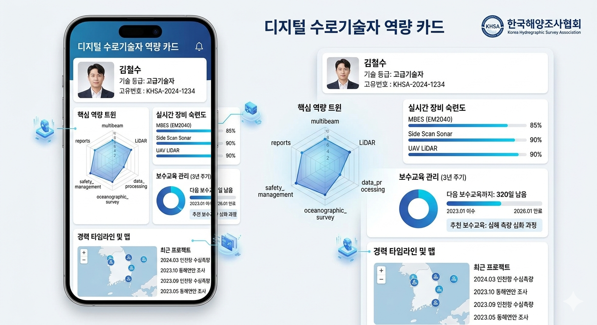

협회의 해양관측시설 관리용 경량 디지털트윈을 출발점으로, 관측소 상태와 인력 역량, 교육·자격, 현장 배치 판단까지 한 화면에서 연결하는 플랫폼 구상을 제안합니다. 핵심은 단순 인사관리 시스템이 아니라 누가 어떤 현장과 장비, 업무를 수행할 수 있는지 즉시 판단되는 운영 플랫폼으로 보이게 하는 것입니다.
01. 운영 대시보드
첫 화면에서 전체 관측소 상태, 오늘 점검 일정, 즉시 대응이 필요한 현장, 자격 만료와 담당자 공백까지 함께 파악하는 구조입니다. 보고용 화면이면서 동시에 운영자의 첫 작업 화면으로 보이게 설계했습니다.
02. 인력 상세카드
이름과 소속을 보여주는 인사카드가 아니라, 어떤 장비와 현장, 업무를 수행할 수 있는지 바로 확인하는 구조입니다. 교육 이력, 자격, 현장 경력, 평가 기록이 하나로 이어집니다.
해양관측운영팀 · 현장 대응 리드

실제 카드 형태를 함께 보여주어 자격, 수행 이력, 현장 투입 가능 정보를 화면 기반으로 설명할 수 있도록 구성했습니다.
03. 교육/자격 관리
단순 LMS가 아니라 현장 투입 가능 여부를 중심으로 필수 교육 미이수자, 자격 만료 예정자, 특정 지역 인력 공백까지 함께 관리하는 화면입니다.
04. 현장 배치 / 추천
대상 관측소, 장애 유형, 우선순위, 필요 기술을 입력하면 적합도 점수와 추천 이유를 함께 제시합니다. 이 화면이 플랫폼 전체에서 가장 강한 AI/추천 시스템 인상을 주는 핵심 화면입니다.
05. 경력 · 이력 분석
누적 투입 이력, 지역별 기술 분포, 자격 만료 추세, 위험 업무 공백을 함께 보며 조직 차원의 운영 역량을 진단합니다. 단순 통계가 아니라 인력 운영 전략을 지원하는 분석 화면입니다.